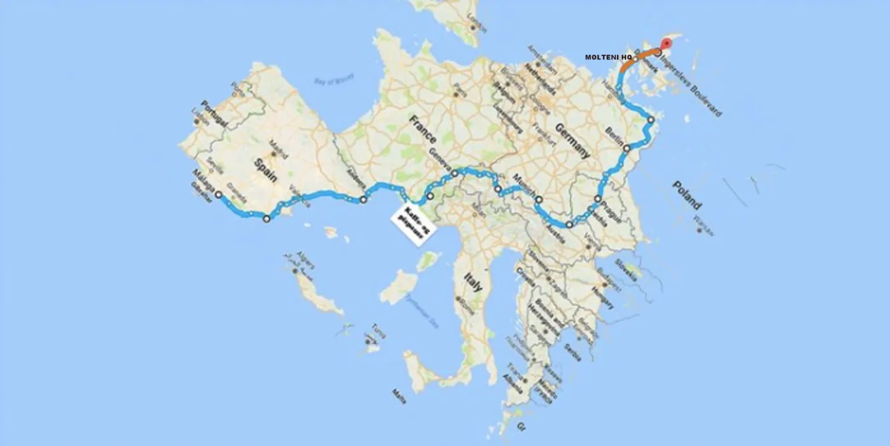

Pastoren kommer

Kaptajnen har indkald Det Orange Eksprestog til en “search, rescue & escort mission”.
Squadra Moltenis gode ven, Pastor Mogensen, har besluttet sig for, sådan indtil- og næsten uden videre, at tage på et langt cykeleventyr. Ikke et lokalt ét, dérnede i Sydspanien, hvor man uden problemer kan køre med Velofelx 23mm og korte rør hele året rundt. Nej, et cykeleventyr, der bringer ham nordpå. Til dér hvor der både er regn, modvind og punkteringer i vejen. Til Danmark, hvor han er blevet stævnet til at køre GP GSV 2018 på Ingerslev Boulevard i Aarhus.
Pastor Mogensen hader at rejse. Men elsker at cykle. Og når han så bliver stævnet med følgende fra selveste Il Dottore, Chefen af Gruppo Sportivo Velopresse, så er der ikke meget andet at gøre, end at spænde cykeltaskerne på cyklen – og vende bremsegrebene med nord.
Du er hermed stævnet og bedes fremmøde til GP GSV d. 7/9-2018 på Jess Ingerslevs Blvd, 8000 Aarhus C. Sæt kryds i kalenderen.
Med venlig hilsen Chefen, SkråtOp!
I sit seneste blog-indlæg har Pastoren kiddet banen op – og malet ruten til Malaga – Ingerslev Boulevard, Aarhus.


Men dér hvor flintstenene begynder at viser tænder. Dér hvor den danske meget-langtids-midlertidige grænsekontrol har sat en prop i EUs frie indre bevægelig- og rummelighed. Dér hvor hjemmeværnet passer på det hjemmelige. Dér vil Det Orange Tog tage over – og escortere Pastor M sikkert til Molteni HQ i Vejle – og videre til Aarhus.
Kaptajn Bjørnsteen har sendt en brev til Pastoren. Ja, der står brev. Sådan ét papir og kuvert-agtigt noget – fra postkasse til postkasse. Mens og indtil sådan et brev bliver fejlleveret indtil flere gange af Post Danmark og deres europæiske kolleger, så har Kaptajnen indkaldt Det Orange Tog til at løfte opgaven: En “search, rescue & escort mission”: At få Pastor M trygt og sikkert til Aarhus.

– Det er jo lang tid siden, at Pastor Mogensen har cyklet rundt i Danmark. Og her oppe er der jo både modvind og regnbyger. Unægteligt noget andet end Funkytown og Costa del Solskin. Så selvfølgelig har jeg vurderet, at Det Orange Eksprest bliver nød til at escortere han sikkert frem, fortæller Kaptajn Bjørnsteen
Selvom det først er i begyndelsen af september 2018, at Pastor M ankommer, er de første forberedelser allerede i gang.
– Det er en del der skal planlægges og arrangeres: Det Orange Eksprestog skal indkaldes – men der er også Molteni Øl der skal brygges, energipølse, der skal hænges til tørring og lagring – og Molteni-kage, der skal bages, siger Løjtnant Kasper Sørensen, der er ansvarlig for koordinering og logistik i operation “Pastor M – search, rescue & escort”